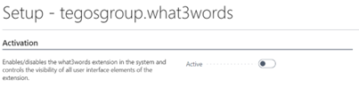
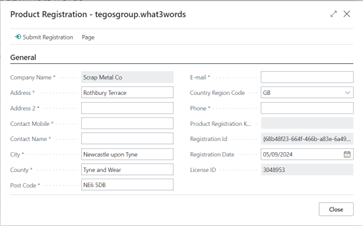
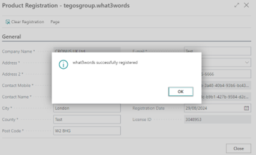
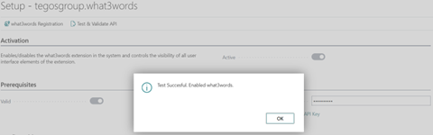
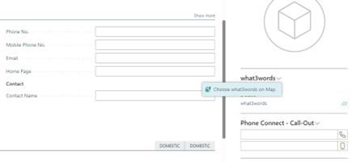

what3words Extension
Document Outline
The purpose of this document is to provide a guide for the setup, operation and monitoring of the tegos what3words Business Central extension and its usage.
Setup
Setup Page
To enable the extension you need to go to the page “Setup - tegosgroup.what3words” and enable the active boolean seen below.

Product Registration
Selecting what3words registration
on the top selection bar will open the following page.

Each text box needs to be filled in for the registration to be successful. You will know if it has been successful or not because a dialog box will open once you click on submit request as seen below.

API's
To use this service, you need to have a google API key, to understand how to acquire one, you can follow the link below the text box.

Once you have a key and it has been inserted you need to click on the “Test & validate API” option on the top bar, if it is a valid key then you will get a confirmation dialog box like the one seen below. You will also notice that now the valid boolean in the prerequisites section has now been enabled.

All of the launch map options will populate automatically so you don’t need to worry about those.
Cache
If you want to store all of the requests made you can enable the options for caching the geocoding data and the API requests. You can see where to access these cached results by hovering your mouse over the text, this will show the tooltip dialog box as seen below.
Factbox Options
There are two final options in the configurable section under the subheading “Factbox”. Enabling “Show Lat+Long on Factbox” will add the Lat and Long to the information available in the factbox where the what3words plugin is located. Similarly, “Show Map on Factbox” will add a map image to the information available in the factbox where the what3words plugin is located. Both of these options are optional and do not need to be selected to use the extension.
Usage
Locations
- Contact Card
- Customer Card
- Locations
- Order Address
- Purchase Order
- Purchase Order Archive
- Purchase Quote
- Sales Order
- Sales Order Archive
- Sales Quote
- Service Credit Memo
- Service Invoice
- Service Order
- Service Quote
- Ship to Address
- Vendor Card
what3words Usage
After going through all the previous steps you are ready to use the what3words extension. Here on the customer card I have entered a postcode with no spaces in it, once hitting enter it has formatted the postcode.
Once you click on the what3words title a drop down will appear giving you the option to select you what3words on a map. The map will then pop up allowing you to select a square using the postcode you previously entered as a starting point.

Once you have selected the square, you can head back to the customer card and you will see the location has been saved.
Clicking on the what3words address will take you to the what3words website where your square will be preselected.
POI (Point of Interest)
Once you set a postcode for a task site or business partner and you want to set more what3words addresses against a task site or business partner, you can set them as an alternative point of interest.
Points of interest use task site postcodes as the starting point, once you open the POI list page, you can to add a description like “Backyard” or “Front Entrance” and then you can choose the what3words from the fact box.
You can add as many POI’s as you want.
Support
Tegos Group has multiple options and contact points for customer support, all of which can be found on our website contact page.